09.3 몬테카를로법 구현
파이썬 코드를 기반으로 몬테카를로(Monte Carlo, MC) 정책 평가 알고리즘을 한 줄 한 줄 직접 작성해 봅니다.
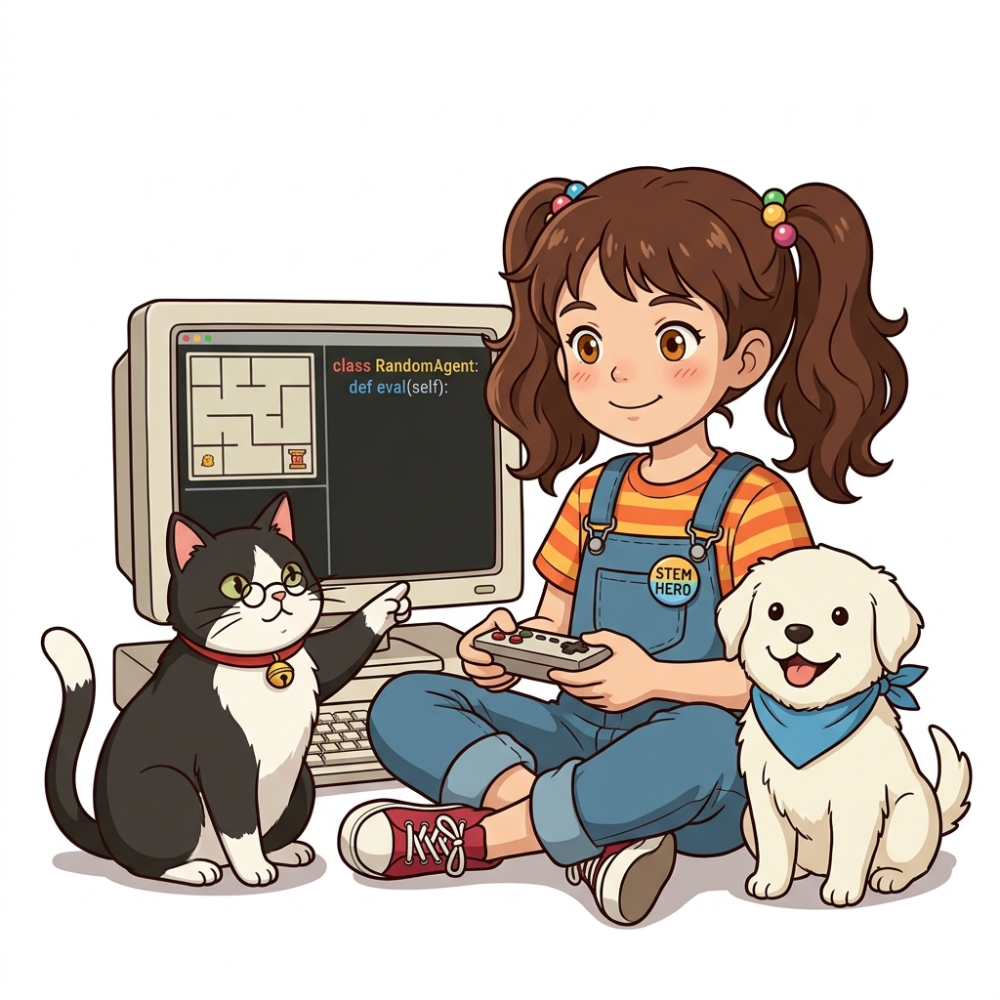
그림 09-3-1 그리드월드 조작 조종 패드를 쥐고 모니터를 보며, RandomAgent와 eval() 코드 연동을 실행하는 도로시와 지니환경 클래스 GridWorld에 물리적 움직임을 전달하는 step() 메서드를 살펴보고, 에이전트 클래스 RandomAgent에서 실시간으로 경험(상태, 행동, 보상)을 리스트에 패키징하여 보관한 뒤, 에피소드가 끝났을 때 역방향으로 거슬러 올라가며 가치 함수를 갱신하는 전 과정을 지니 요정과 이호진 교수님의 직강 코드로 명쾌하게 실습해 봅시다!
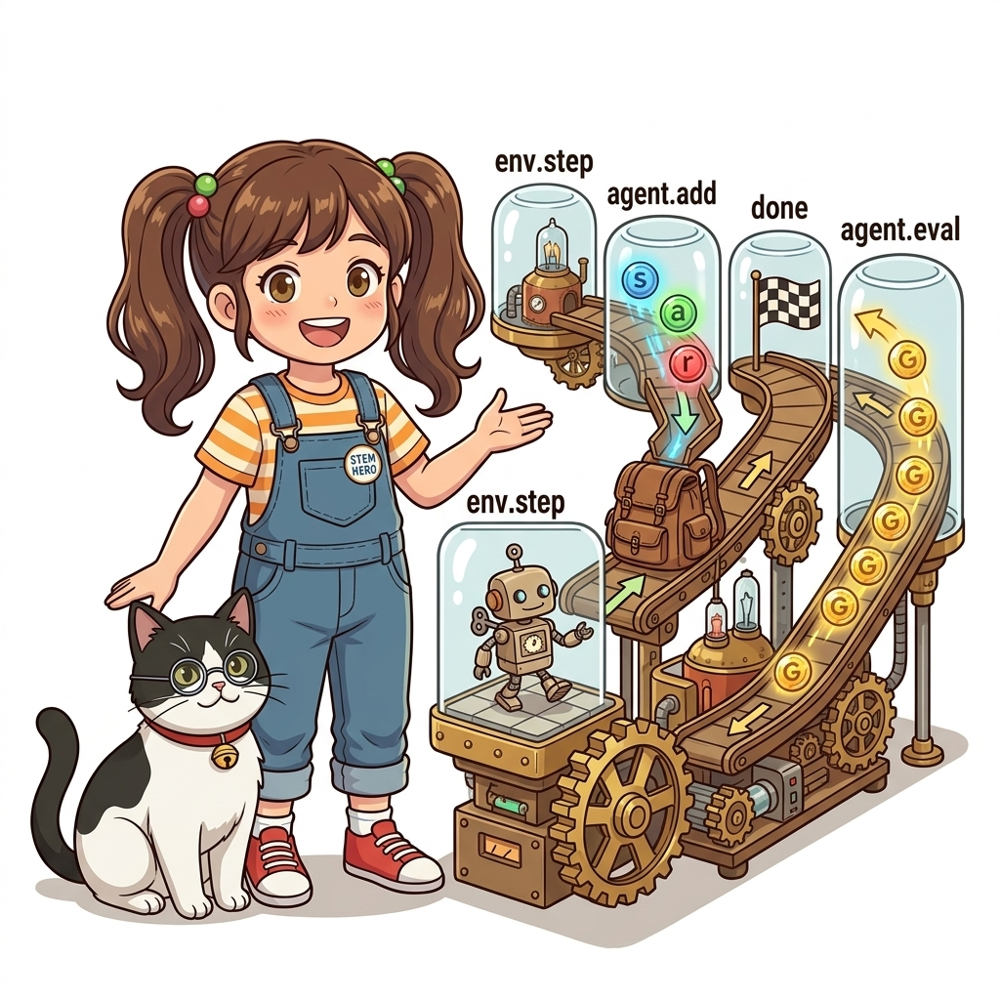
그림 09-3-1b 몬테카를로 정책 평가 파이프라인 4단계 로드맵 (환경 step 상호작용 → memory 배낭 저장 → 에피소드 완주 판정 → reversed 역방향 정산) 인포그래픽09.3.1 3 × 4 그리드월드와 상호작용 인터페이스
이전에 다룬 ‘3 × 4 그리드 월드’ 문제를 이번에는 환경 모델(전이 확률과 보상 함수)을 전혀 모르는 상태에서 몬테카를로법으로 풀어보겠습니다.
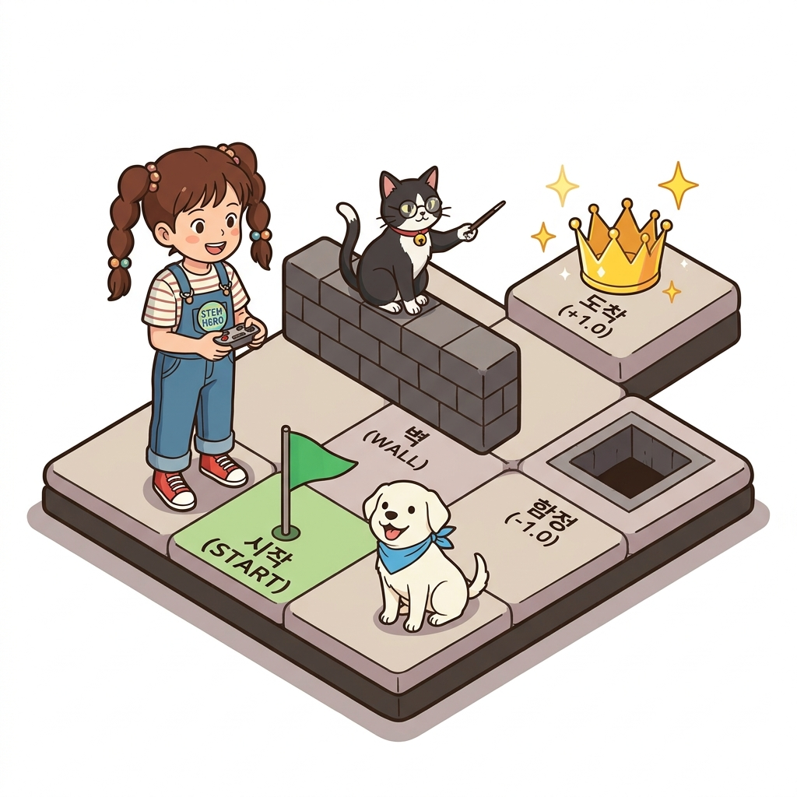
그림 09-10 3 × 4 그리드 월드 환경 구조 (시작, 벽, 골, 함정)환경을 알고 있을 경우
동적 프로그래밍(DP)에서는 미로의 전체 지도(각 칸에서 이동했을 때의 확률적 전이 행렬과 보상 공식)를 컴퓨터에게 미리 모두 주었습니다.
그림 09-3-1c 환경의 전이 확률 행렬과 보상 공식을 모두 펼쳐놓고 위에서 내려다보며 계산하는 DP의 전지적 관점
환경을 모르고 있을 경우
하지만 몬테카를로법에서는 지도를 전혀 건네주지 않습니다.
에이전트는 눈을 가린 탐험가처럼 미로 안으로 직접 뛰어들어, 발을 한 걸음 내딛고 환경이 돌려주는 피드백만을 관찰하며 배워야 합니다. 이렇게 하려면 에이전트가 “한 걸음 앞으로 가보자!”라고 환경에게 실제로 행동을 취하도록 시키는 명령 메서드가 반드시 필요합니다.
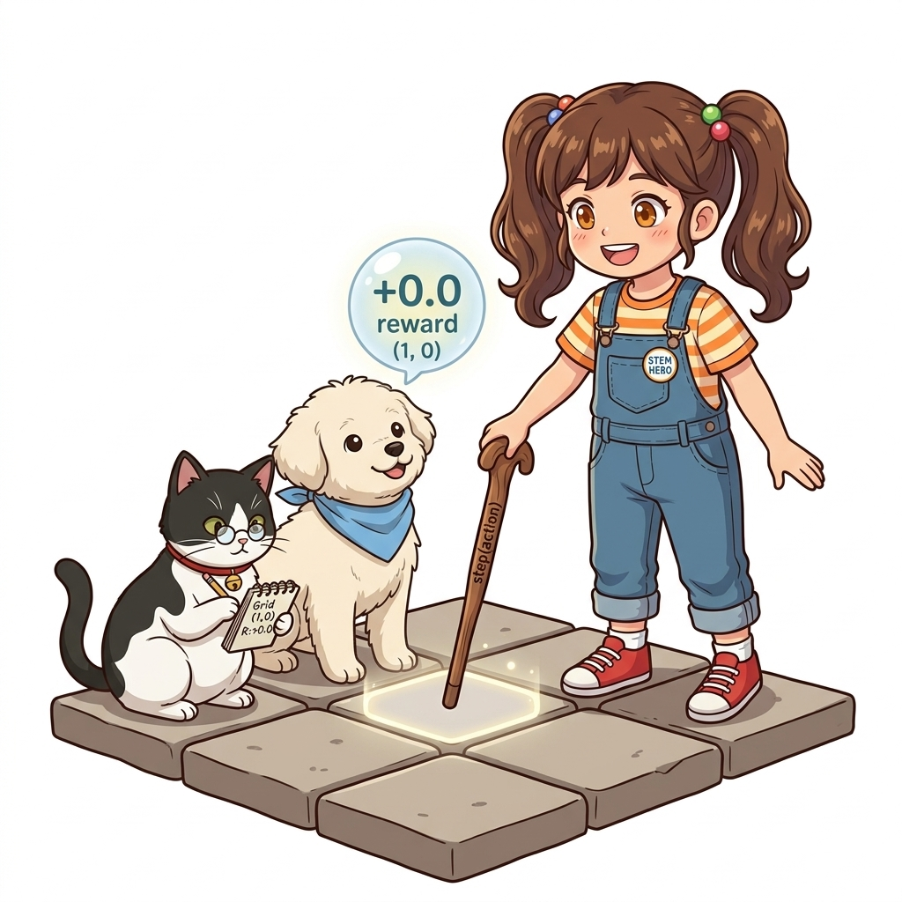
그림 09-3-1d 지도가 없는 안개 속 그리드월드에서 step(action) 지팡이로 한 걸음씩 내딛으며 피드백을 받는 눈먼 탐험가 도로시와 토토1) step() 메서드의 동작 원리와 반환값
GridWorld 클래스에는 에이전트에게 물리적 행동을 실행하게 하는 핵심 인터페이스인 step() 메서드가 있습니다.
다음 예제 코드를 함께 살펴봅시다.
from common.gridworld import GridWorld
env = GridWorld()
action = 0 # 0: 상(Up), 1: 하(Down), 2: 좌(Left), 3: 우(Right)
next_state, reward, done = env.step(action) # 환경에 행동 전달
print('next_state:', next_state)
print('reward:', reward)
print('done:', done)
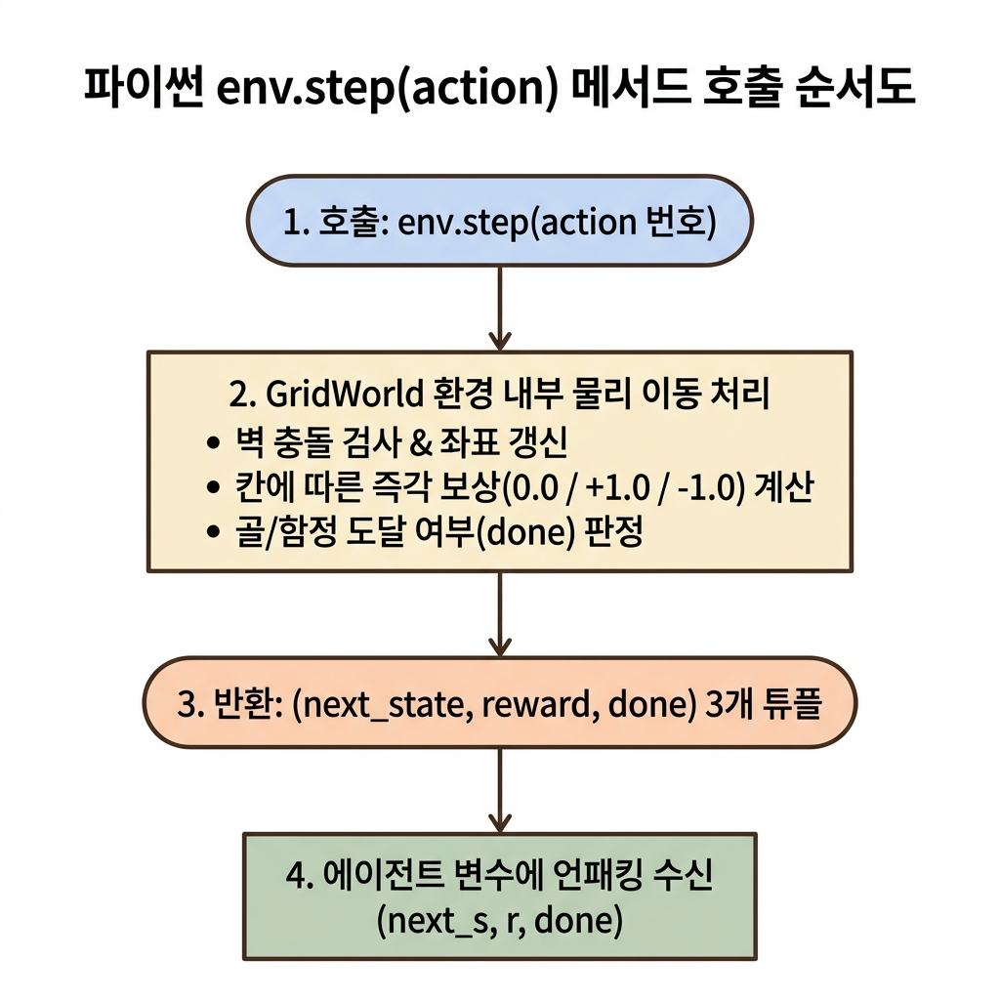
그림 09-3-1e 파이썬env.step(action) 메서드 호출과 반환값 수신 표준 순서도: action 번호 전달부터 물리 전이 후 3대 반환값 수신까지
출력 결과
next_state: (1, 0)
reward: 0.0
done: False
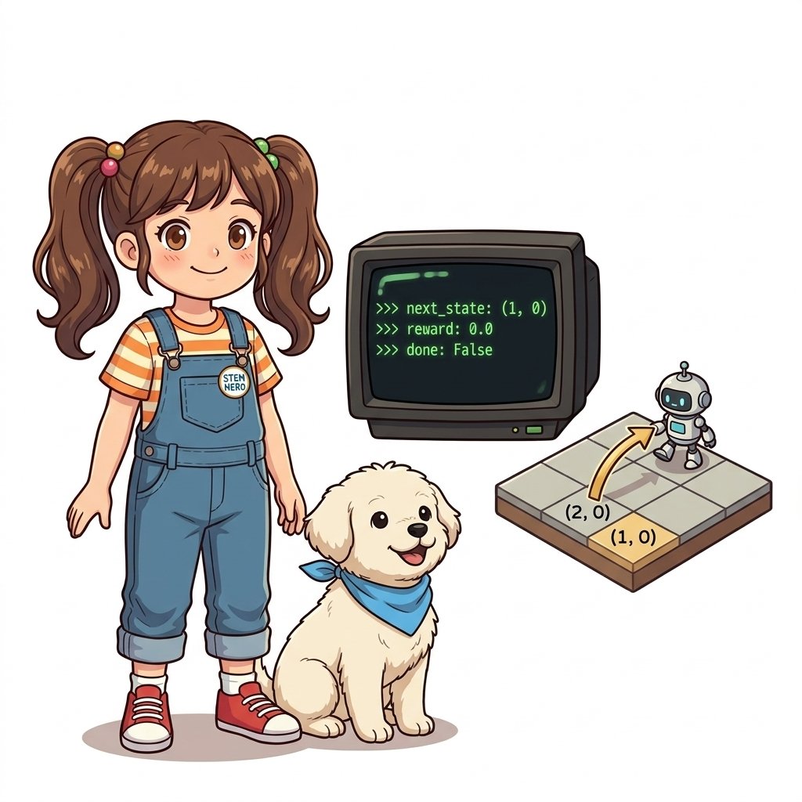
그림 09-3-1f 터미널 출력 결과 3대 요소(좌표 (1,0), 보상 0.0, 종료 False)를 그리드월드 실제 발판과 1:1 매핑한 시각적 인포그래픽step() 메서드는 에이전트가 취하고자 하는 정수형 행동 번호(action)를 매개변수로 받습니다.
env.step(action)을 호출하면 환경 내부의 물리 법칙에 따라 에이전트가 실제로 이동하고, 그 물리적 상호작용의 결과로 다음 3가지 핵심 데이터를 튜플 형태로 한 묶음 반환합니다:
| 반환값 변수 | 타입 | 수학 기호 | 의미 및 역할 |
|---|---|---|---|
next_state |
tuple (예: (1, 0)) |
St+1 | 에이전트가 행동을 취한 직후 새롭게 발을 디딘 다음 상태 위치 좌표 |
reward |
float (예: 0.0, 1.0, -1.0) |
Rt | 해당 칸으로 이동하면서 환경으로부터 즉시 획득한 보상 점수 |
done |
bool (True / False) |
종료 신호 | 에피소드 종료 여부 플래그 (골이나 함정에 도달하면 True) |
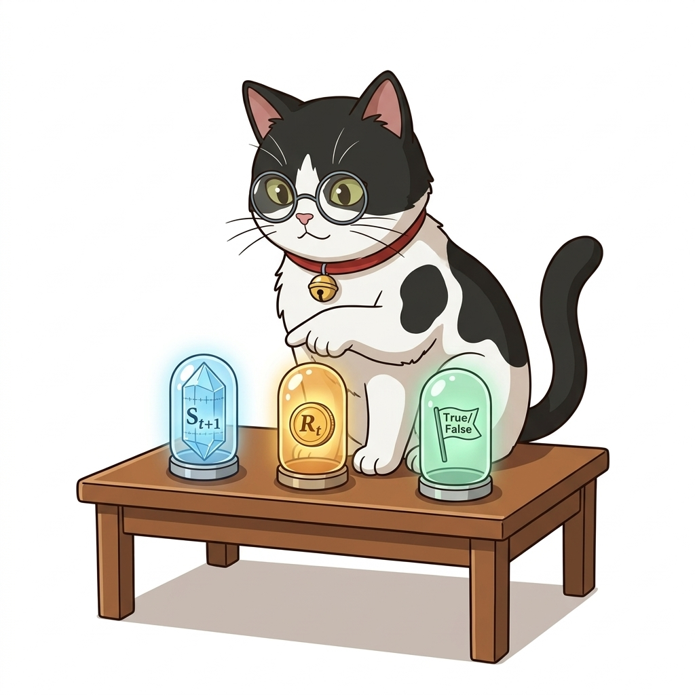
그림 09-3-1gstep() 메서드가 배출하는 핵심 3대 캡슐: next_state(S_{t+1}), reward(R_t), done(종료플래그)의 구조와 의미 분해
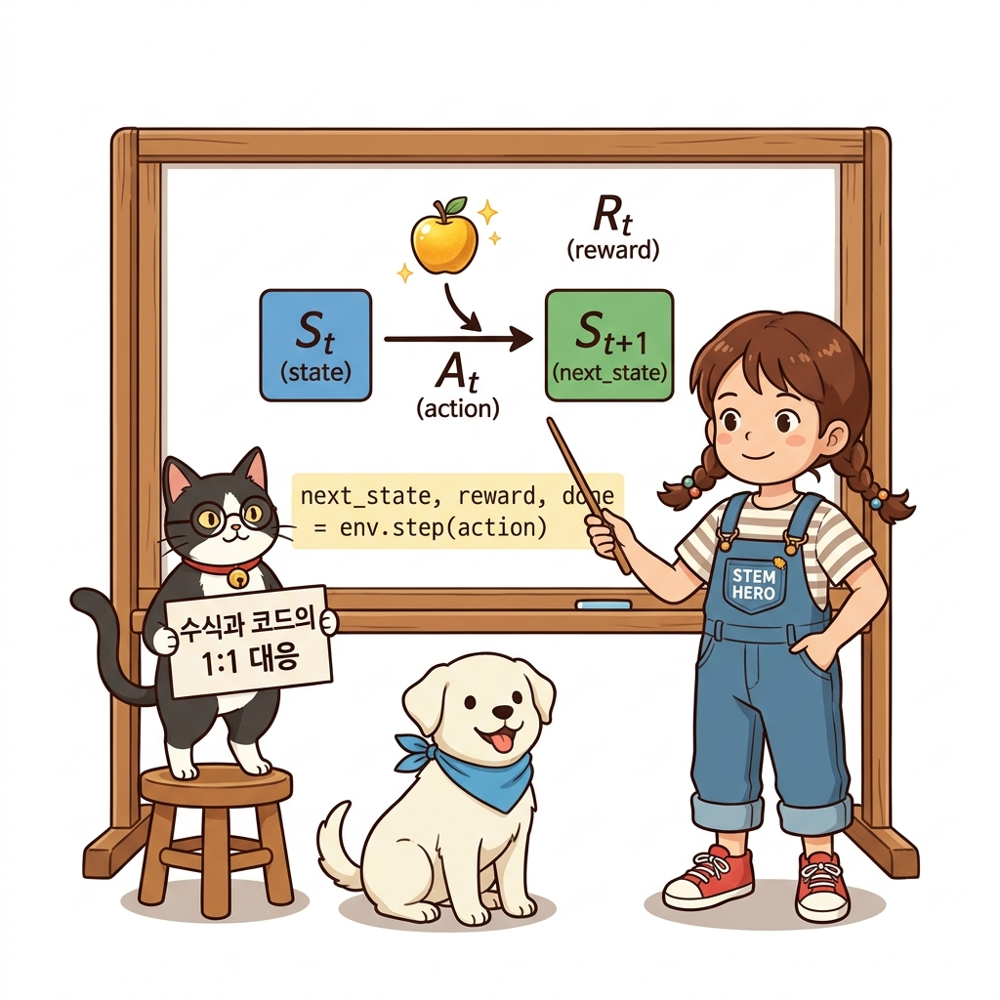
그림 09-11 코드 변수와 수식 기호의 1:1 대응 관계그림과 같이 현재 시간을 t라고 했을 때, St는 state, At는 action에 해당합니다. 시간 t에 에이전트가 행동을 하면, 보상으로 Rt를 얻고 다음 상태 St+1로 전이합니다. 이때 얻은 보상 Rt가 reward에 해당하고 다음 상태 St+1이 next_state에 해당합니다.
그림 09-3-2 행동 리모컨의 버튼을 누르고 얻은 보상 사과와 다음 상태 이동 경험을 배낭 속 memory 리스트에 패키징하여 담는 도로시와 지니
👧 도로시와 토토의 비유로 이해하기:
도로시가 그리드월드 발판 위에서 게임 리모컨의step(action)버튼을 딸깍 누르면, 화면 속 캐릭터가 한 걸음 이동하고 즉시 얻는 보상 사과(reward)와 새 발판 위치(next_state), 그리고 게임이 끝났는지(done)를 컴퓨터가 친절하게 돌려줍니다.
도로시는 이 값들을 허공에 날려버리지 않고, 등에 메고 있는 배낭(self.memory) 속에(상태, 행동, 보상)구슬 팩으로 묶어 차곡차곡 담아둡니다.
2) 전체 상호작용 루프의 순환 구조
에이전트와 환경이 대화하는 전체 라이프사이클은 하나의 원형 순환 루프로 요약할 수 있습니다.
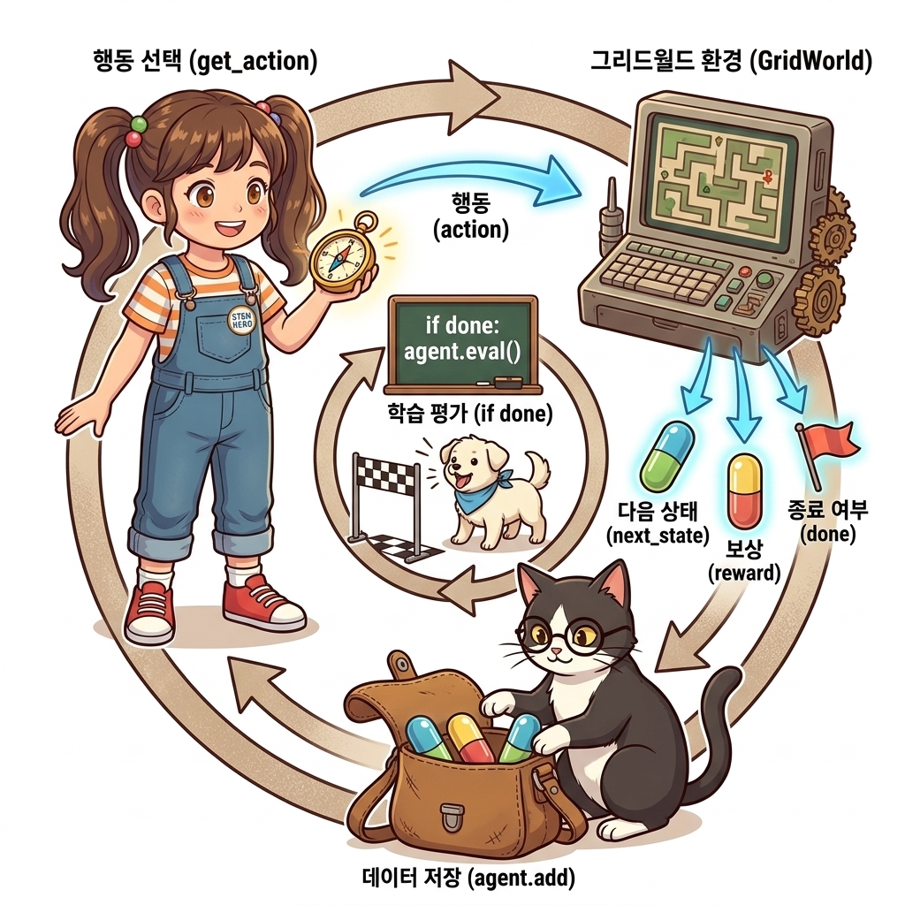
그림 09-3-3 강화학습 에이전트와 그리드월드 환경의 파이썬 인터랙션 루프 순환 흐름도- 행동 결정 (
get_action): 도로시(에이전트)가 나침반을 보며 현재 위치state에서 취할 행동action을 결정합니다. - 행동 실행 (
step):GridWorld콘솔에action을 전달하면, 콘솔 내부에서 물리 전이가 일어나(next_state, reward, done)캡슐 3개를 배출합니다. - 경험 저장 (
add): 조교 지니 냥이가 세 캡슐을 가죽 가방memory속에 정갈하게 차곡차곡 담습니다. - 목표 도달 판정 (
if done): 토토가 체크 플래그 깃발을 보고 “멍멍!” 짖어 모험의 완주를 알리면, 비로소 배낭을 열어 몬테카를로 역방향 정산(agent.eval())을 실행합니다!
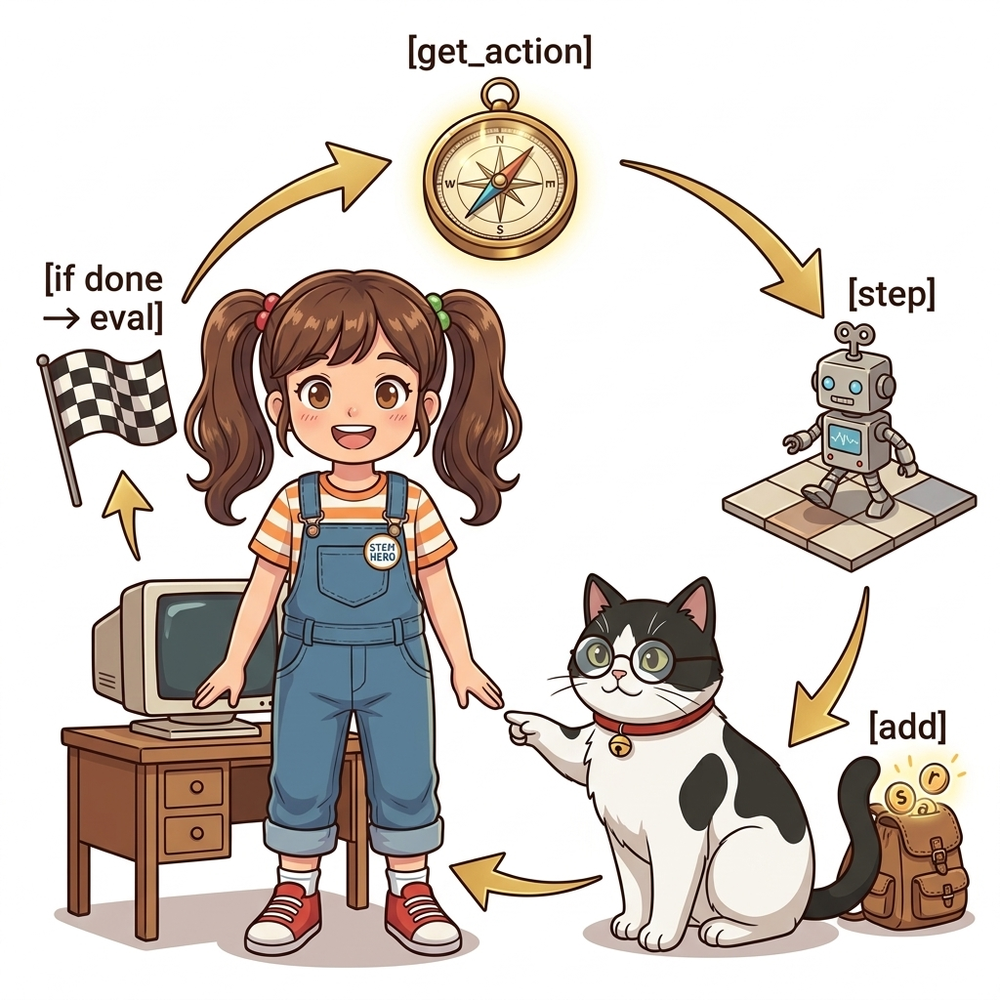
그림 09-3-3b 행동결정(get_action) → 행동실행(step) → 경험저장(add) → 완주판정(done) 4단계 상호작용 순환 상세 다이어그램[!NOTE] 💡 상태 전이가 확률적인 환경이라면?
이번 ‘3 × 4 그리드 월드’ 예제에서는 상태 전이가 100% 결정적으로 이루어지지만, 현실 세계처럼 확률적으로 결정되는 경우도 얼마든지 생각할 수 있습니다.
예를 들어 빙판길에서 에이전트가 오른쪽으로 이동하는 행동을 시도하면 80%의 확률로만 오른쪽으로 정상 이동하고, 나머지 20%의 확률로는 미끄러져 제자리에 머물러 있을 수 있습니다.
상태 전이가 확률적일 때도 에이전트는 아무런 걱정이 없습니다. 그저step()메서드를 호출하고 반환되는 실제 결과를 관찰하여 메모리에 적어두기만 하면, 몬테카를로법이 알아서 평균을 내어 참 가치를 정확히 수렴시키기 때문입니다!
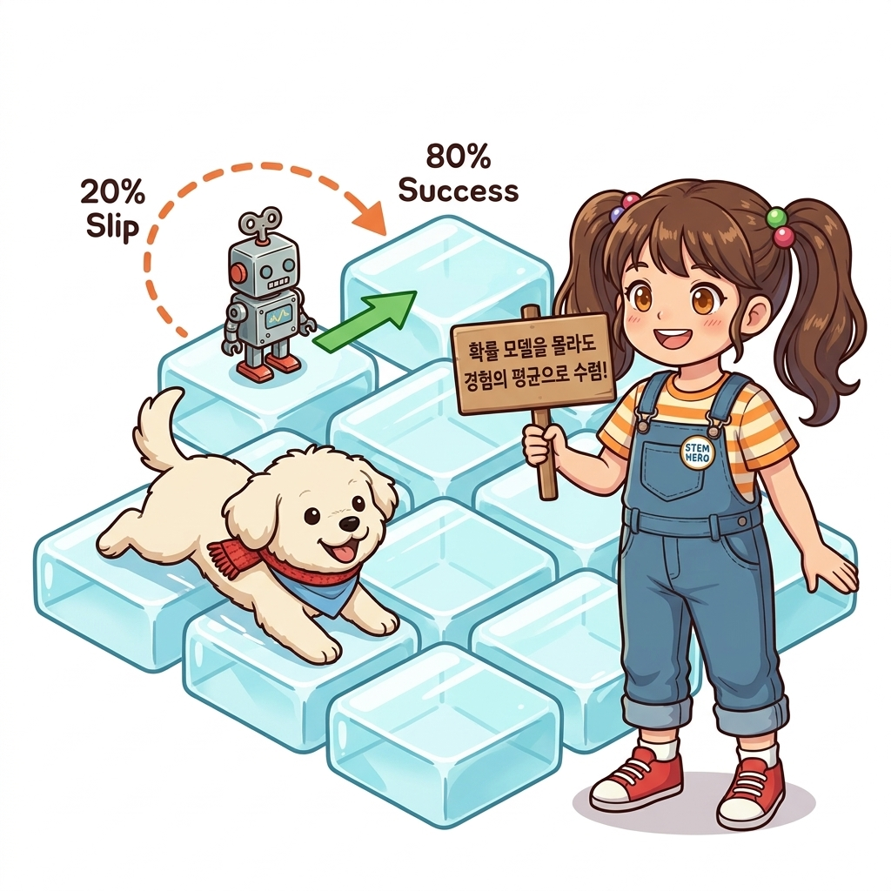
그림 09-3-3c 빙판길 그리드월드에서 오른쪽 이동 시도 시 80% 성공과 20% 미끄러짐을 겪으며 실제 경험 평균으로 불확실성을 극복하는 몬테카를로법환경을 최초 출발 상태로 되돌리는 메서드는 reset()입니다.
env = GridWorld()
state = env.reset() # 환경을 출발점 좌표 (2, 0)으로 초기화
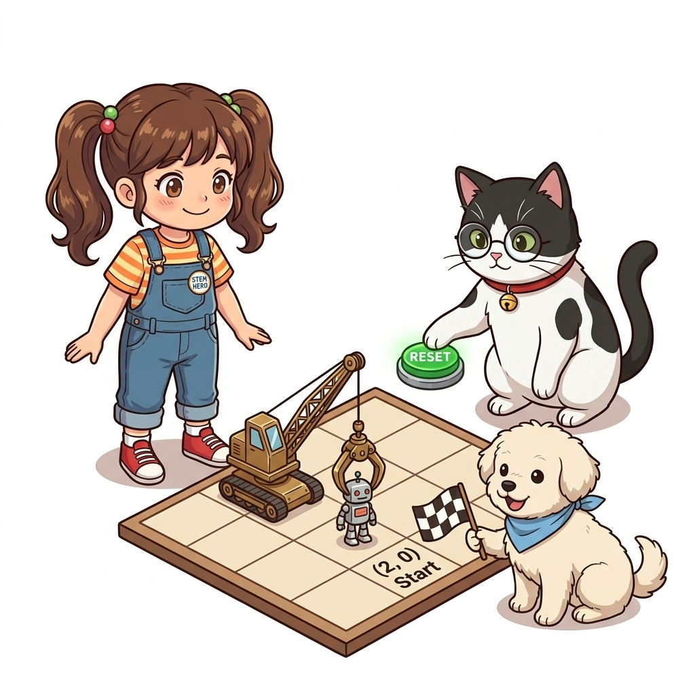
그림 09-3-3d 매 에피소드 시작 시 에이전트를 출발점 좌표 (2,0) 발판으로 안전하게 리셋시키는env.reset() 동작 시각화
09.3.2 RandomAgent 클래스 상세 해부
이제 몬테카를로법을 이용하여 정책 평가를 수행하는 에이전트를 파이썬 클래스로 구현하겠습니다.
상, 하, 좌, 우 4개 방향으로 동일하게 25%씩 무작위로 발걸음을 옮기는 에이전트를 RandomAgent 클래스로 작성합니다.
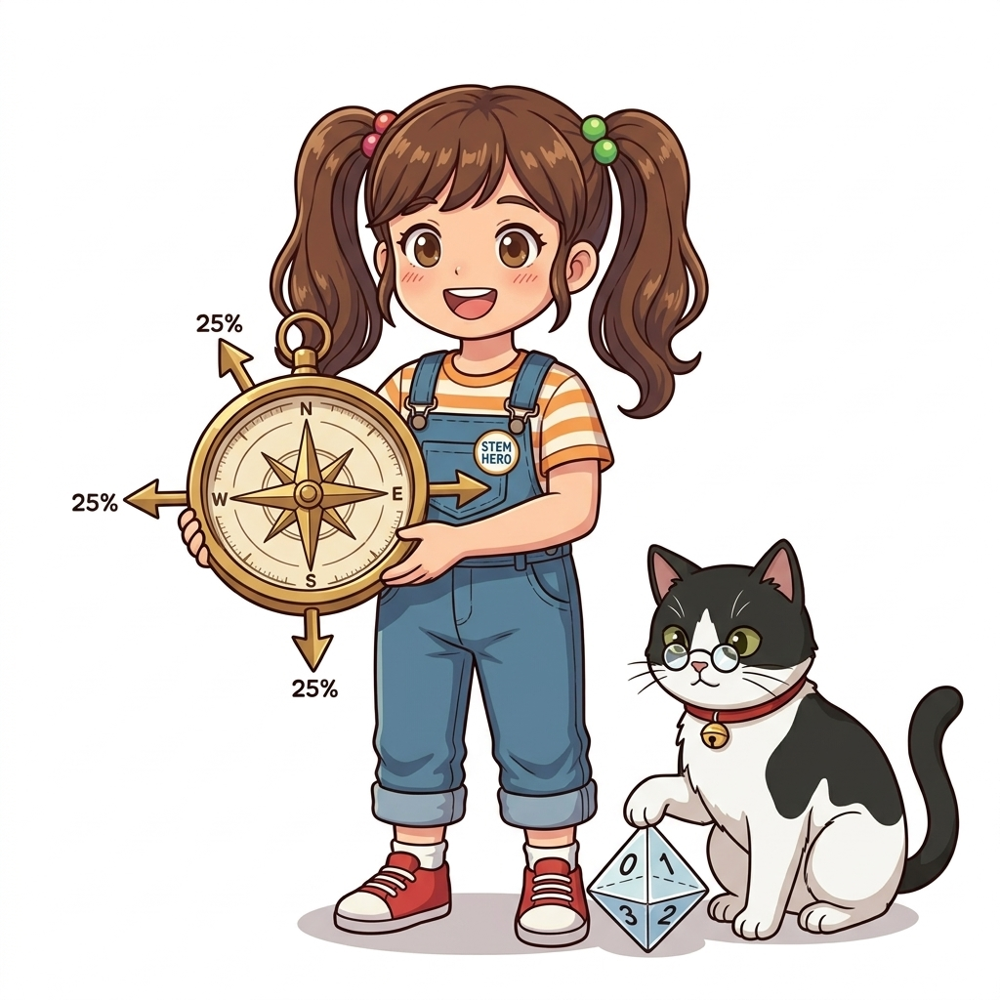
그림 09-3-3e 상, 하, 좌, 우 4개 방향으로 각각 25%씩 균등한 확률 나침반을 쥐고 출발선에 선 RandomAgent 도로시와 지니1) 클래스 초기화와 defaultdict의 마법
먼저 RandomAgent의 생성자와 행동 선택 메서드를 살펴봅시다:
from collections import defaultdict
import numpy as np
class RandomAgent:
def __init__(self):
self.gamma = 0.9
self.action_size = 4
random_actions = {0: 0.25, 1: 0.25, 2: 0.25, 3: 0.25}
self.pi = defaultdict(lambda: random_actions)
self.V = defaultdict(lambda: 0)
self.cnts = defaultdict(lambda: 0)
self.memory = []
def get_action(self, state):
action_probs = self.pi[state]
actions = list(action_probs.keys())
probs = list(action_probs.values())
return np.random.choice(actions, p=probs)
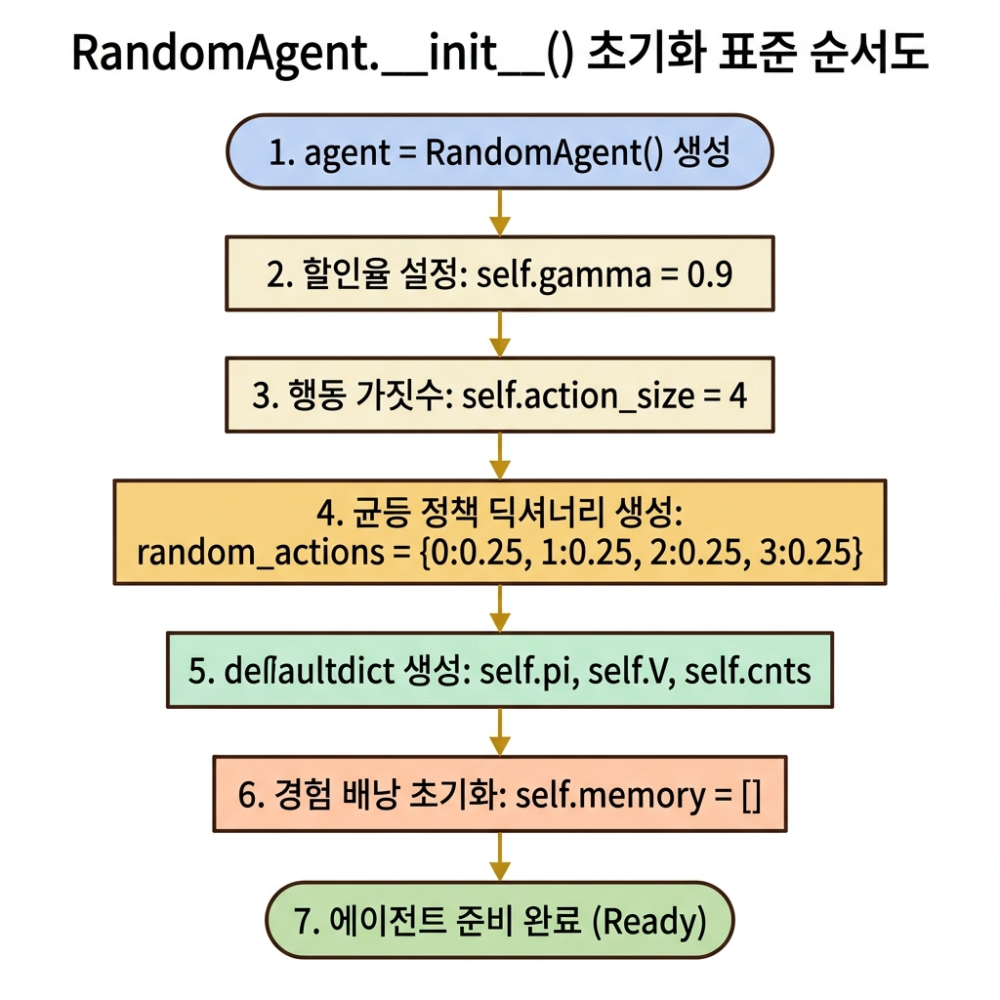
그림 09-3-3fRandomAgent 초기화(__init__) 속성 7총사(gamma, action_size, pi, V, cnts, memory) 메모리 생성 표준 순서도
초기화 메서드 __init__()의 각 속성을 상세히 분석해 보겠습니다:
self.gamma = 0.9: 미래에 얻을 보상을 현재 가치로 할인해 주는 할인율 γ입니다.self.action_size = 4: 가능한 행동의 가짓수(0: 상, 1: 하, 2: 좌, 3: 우)입니다.random_actions = {0: 0.25, 1: 0.25, 2: 0.25, 3: 0.25}: 4방향으로 각각 25%의 균등한 확률을 부여한 딕셔너리입니다.-
self.pi: 정책 π(as)를 나타냅니다. defaultdict로 감싸져 있어 어느 상태에서든 기본적으로 4방향 25% 균등 확률을 반환합니다. self.V: 상태 가치 함수 추정치 V(s)를 저장하는 테이블입니다.self.cnts: 각 상태 s를 지금까지 몇 번이나 방문했는지 방문 횟수 N(s)를 기록하는 테이블입니다. 증분 평균 갱신 시 분모(1 / N(s))로 사용됩니다.self.memory = []: 에이전트가 한 에피소드 동안 겪은 경험(state, action, reward)들을 순서대로 담는 리스트 배낭입니다.
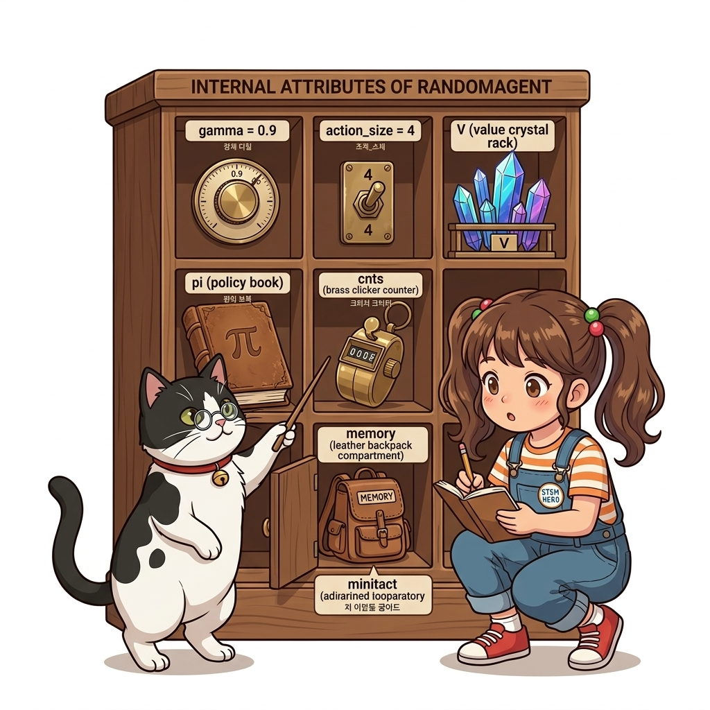
그림 09-3-3g RandomAgent 내부의 7대 핵심 속성(할인율, 행동크기, 정책pi, 가치함수V, 방문횟수cnts, 경험배낭memory) 구조도💡 파이썬 defaultdict vs 일반 dict 비교
왜 일반적인 딕셔너리 대신 파이썬 내장 collections.defaultdict를 사용할까요?
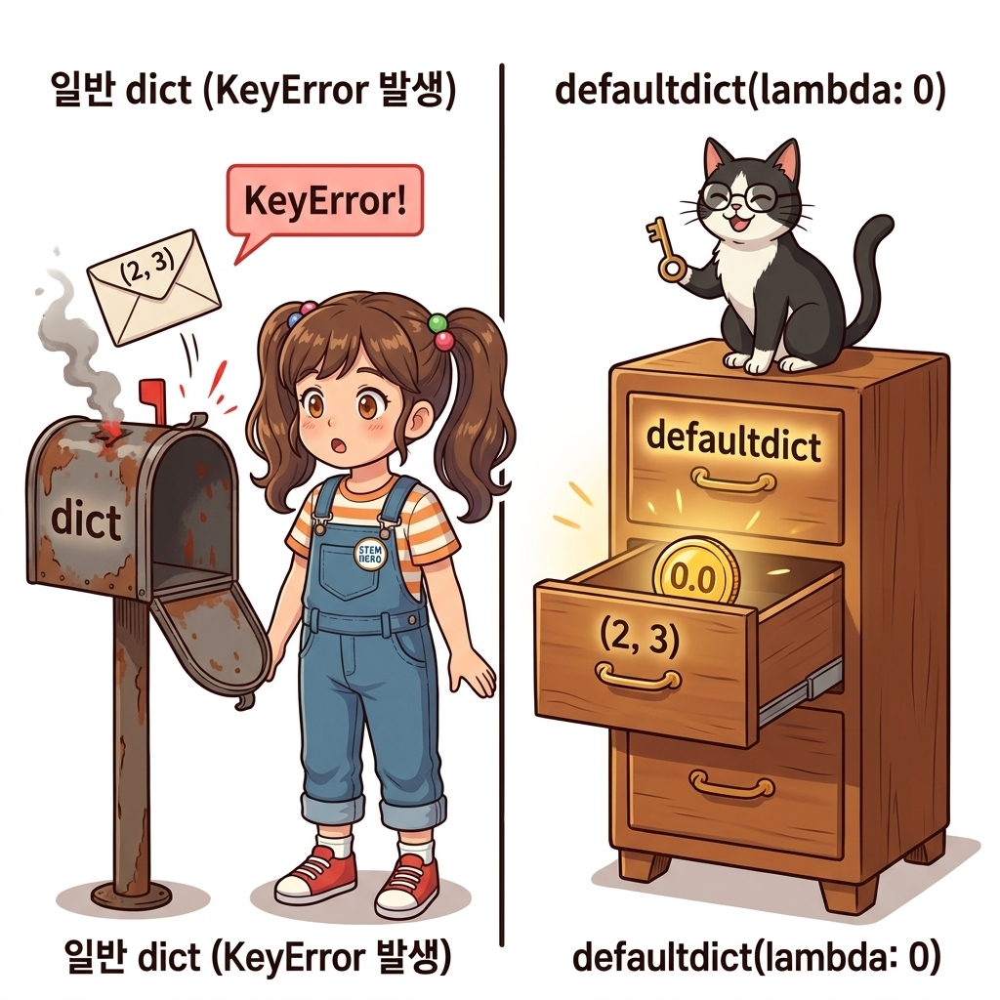
그림 09-3-4 일반 dict의 KeyError 폭발과 defaultdict의 마법 같은 자동 초기화 금고 비교# 1. 일반 dict를 사용할 때의 치명적 문제점
v_dict = {}
print(v_dict[(2, 0)]) # KeyError: (2, 0) 발생으로 프로그램 비정상 종료!
# 2. defaultdict를 사용할 때의 우아한 해결책
from collections import defaultdict
v_default = defaultdict(lambda: 0)
print(v_default[(2, 0)]) # 0 (등록되지 않은 키가 들어오면 자동으로 0을 생성!)
에이전트가 낯선 좌표에 처음 발을 디뎠을 때, 일반 딕셔너리는 KeyError를 일으키며 멈춥니다. 하지만 defaultdict(lambda: 0)을 사용하면, 사전에 모든 좌표를 일일이 루프로 초기화해 두지 않아도 에이전트가 방문하는 즉시 안전하게 초깃값 0을 부여하고 계산을 이어갈 수 있습니다.
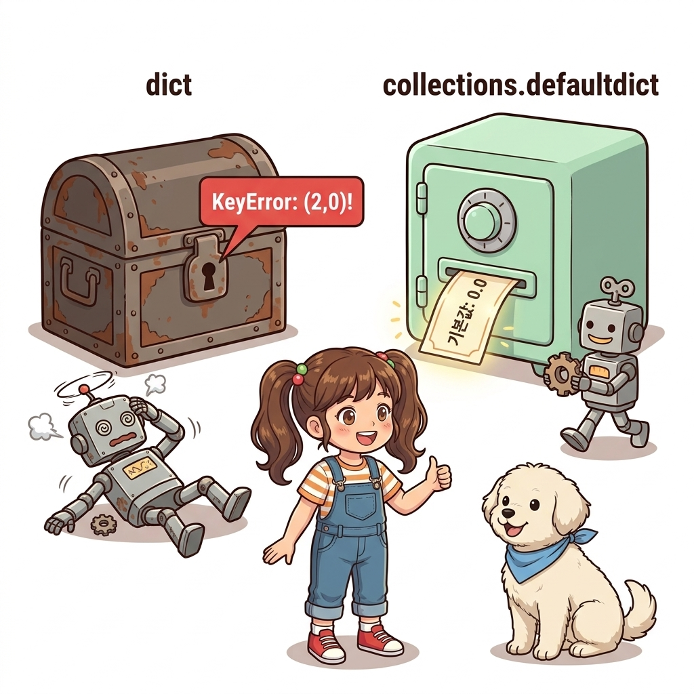
그림 09-3-4b 미등록 키 접근 시 KeyError 폭탄이 터지는 일반 dict와 자동으로 0을 생성하며 안전하게 계산을 잇는 defaultdict 비교 인포그래픽2) get_action() 메서드 분석
get_action(self, state) 메서드는 주어진 상태 state에서 정책에 따라 행동을 확률적으로 샘플링합니다:
def get_action(self, state):
action_probs = self.pi[state] # {0: 0.25, 1: 0.25, 2: 0.25, 3: 0.25}
actions = list(action_probs.keys()) # [0, 1, 2, 3]
probs = list(action_probs.values()) # [0.25, 0.25, 0.25, 0.25]
return np.random.choice(actions, p=probs)
np.random.choice(actions, p=probs)는 넘파이(NumPy)의 핵심 샘플링 함수입니다. p 매개변수에 지정된 확률 분포에 비례하여 actions 리스트 안에서 단 하나의 원소를 무작위 추출합니다.
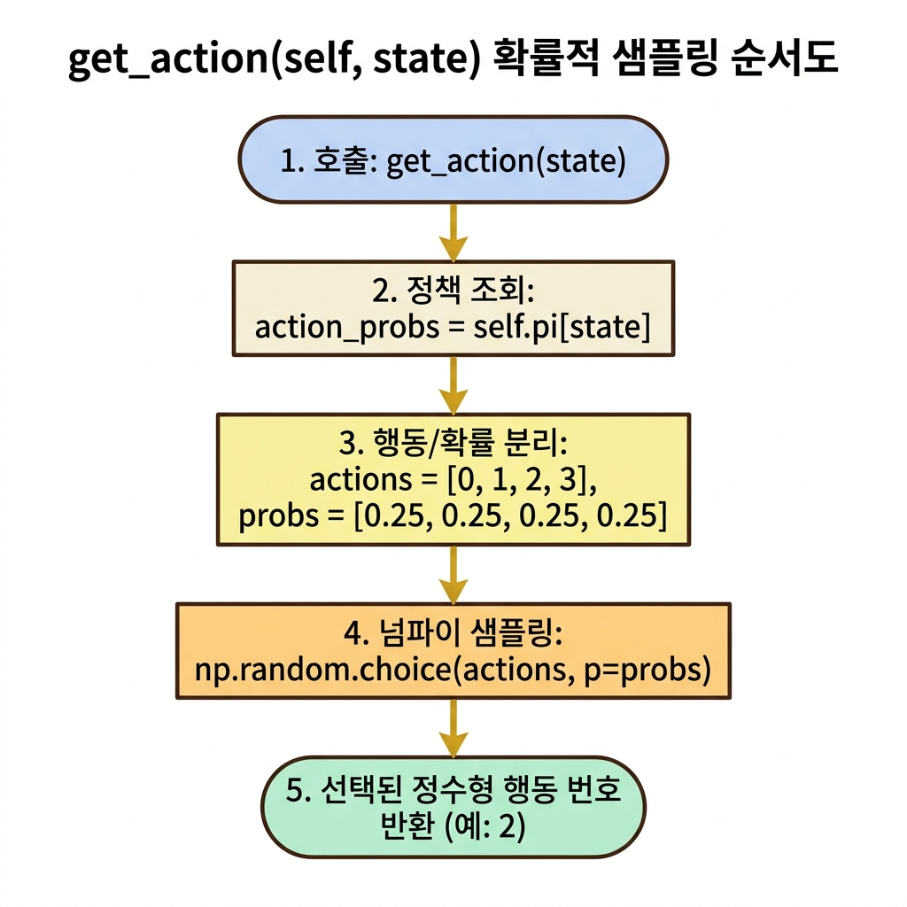
그림 09-3-4cget_action() 메서드 동작 순서도: 상태 s 입력부터 정책 확률 조회 후 np.random.choice() 무작위 행동 반환까지
3) 경험 저장(add), 리셋(reset), 그리고 정책 평가(eval)
다음은 RandomAgent 클래스의 나머지 후반부 메서드들입니다:
class RandomAgent:
# ... (앞부분 생략) ...
def add(self, state, action, reward):
data = (state, action, reward)
self.memory.append(data)
def reset(self):
self.memory.clear()
def eval(self):
G = 0
for data in reversed(self.memory): # 역방향으로(reversed) 거슬러 올라가기!
state, action, reward = data
G = self.gamma * G + reward
self.cnts[state] += 1
self.V[state] += (G - self.V[state]) / self.cnts[state]
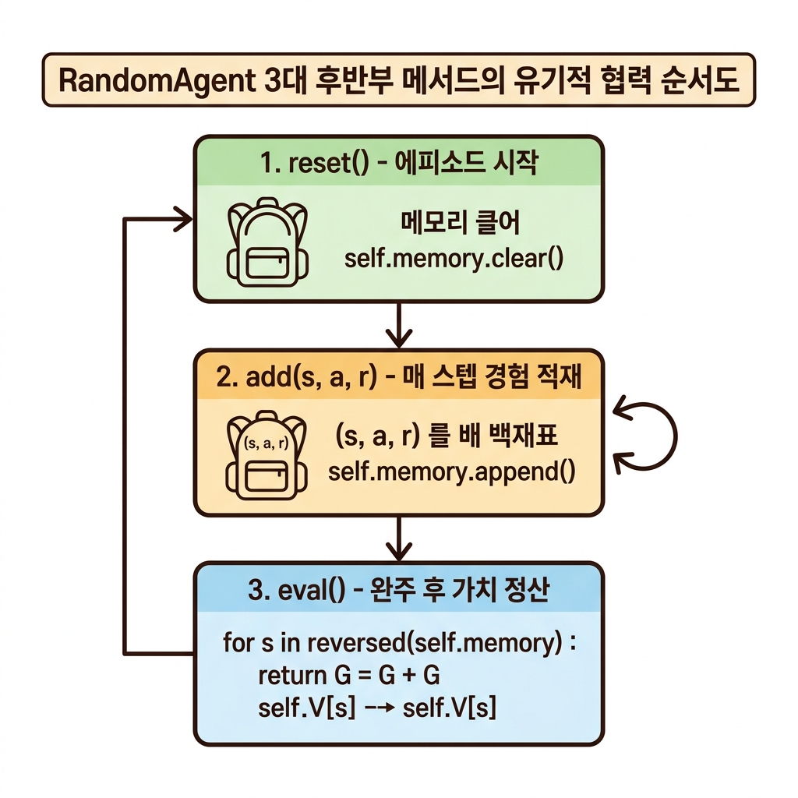
그림 09-3-4dadd()(경험 배낭 적재), reset()(배낭 비우기), eval()(역방향 가치 갱신) 에이전트 3대 메서드 유기적 협력 표준 순서도
① add() 메서드와 메모리 패키징 구조
에이전트가 한 걸음을 내딛을 때마다 add(state, action, reward)를 호출하여 세 요소를 튜플 (state, action, reward)로 묶어 self.memory 리스트에 순서대로 누적합니다.
만약 에이전트가 출발점 S0에서 시작하여 4걸음을 걸어 목표 골 지점 S4에 도착했다면, 에이전트가 실제로 겪은 전체 시계열은 다음과 같습니다:
S0, A0, R0, S1, A1, R1, S2, A2, R2, S3, A3, R3, S4
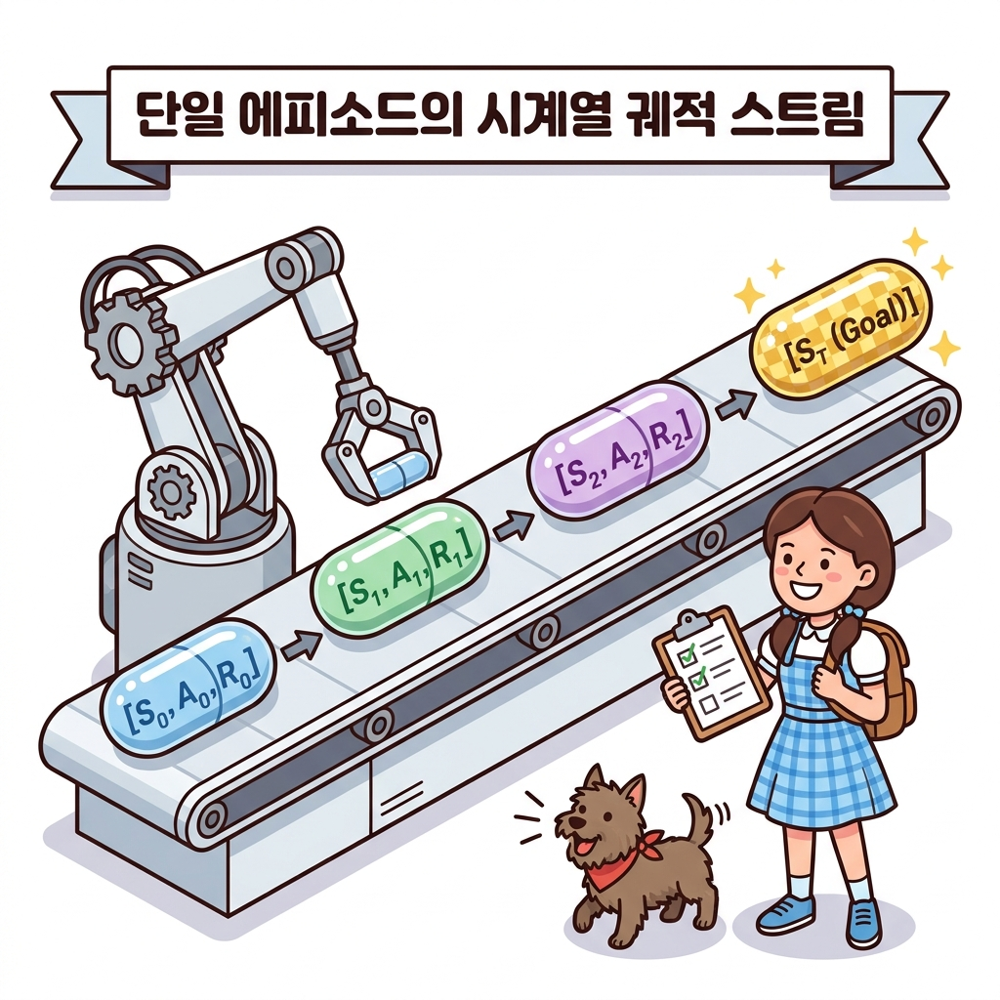
그림 09-3-4e 시간의 흐름(t=0,1,2,3)에 따라 (상태, 행동, 보상)이 컨베이어 벨트처럼 순차적으로 생성되는 시계열 궤적 인포그래픽이때 self.memory에 담기는 최종 데이터 구조는 다음과 같습니다:
self.memory = [
(S0, A0, R0), # 타임스텝 0
(S1, A1, R1), # 타임스텝 1
(S2, A2, R2), # 타임스텝 2
(S3, A3, R3), # 타임스텝 3
]
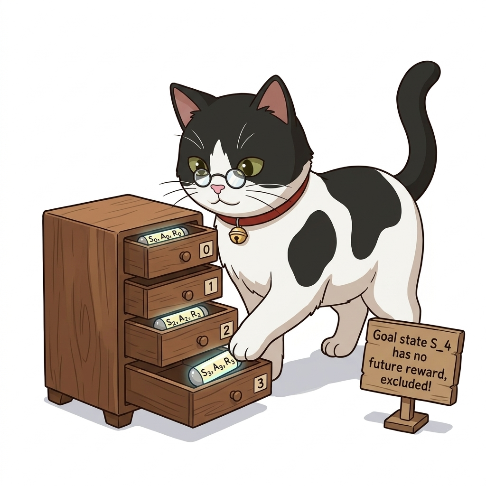
그림 09-3-4f 튜플 팩들이 순서대로 인덱싱되어 memory 리스트 서랍장에 차곡차곡 정돈된 파이썬 내부 메모리 구조도🚨 마지막 종료 상태(S4, 골인 지점)는 왜 memory에 저장하지 않을까요?
골인 지점(종료 상태)은 게임이 완전히 끝난 곳이므로, 그 상태에서 에이전트가 새롭게 취할 수 있는 행동도 없고, 그 이후에 얻을 미래 보상도 전혀 존재하지 않습니다.
즉, 종료 상태의 참 가치 V(Goal)는 정의상 항상 0입니다. 갱신할 필요가 없는 상태이므로 메모리에 굳이 추가하지 않습니다.
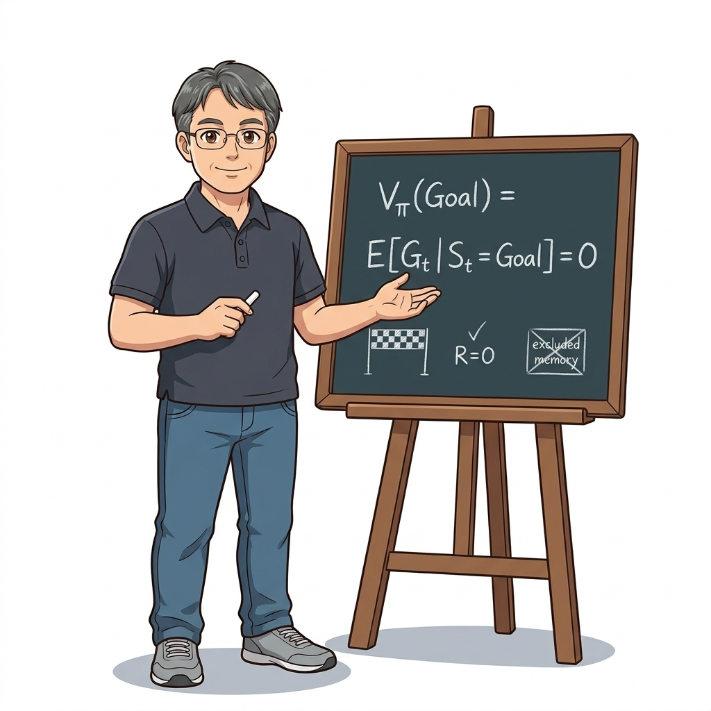
그림 09-3-4g 종료 상태(Goal)는 미래 보상이 전혀 없어 참 가치 V(Goal)=0으로 정의되므로 메모리에 저장할 필요가 없음을 증명하는 수식 인포그래픽② eval() 메서드: 역방향 누적 수익과 증분 평균 갱신
eval() 메서드는 몬테카를로 정책 평가의 심장입니다.
def eval(self):
G = 0
for data in reversed(self.memory):
state, action, reward = data
G = self.gamma * G + reward
self.cnts[state] += 1
self.V[state] += (G - self.V[state]) / self.cnts[state]
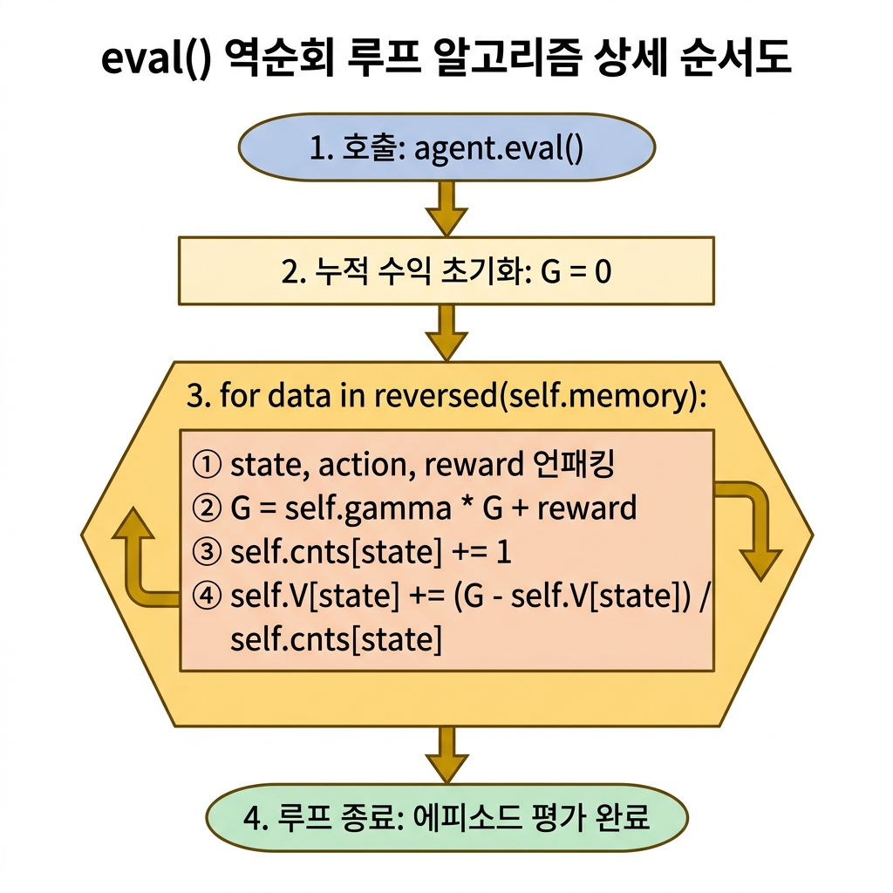
그림 09-3-4heval() 메서드의 역순회 루프 알고리즘 상세 순서도: reversed(memory) 추출부터 점화식 누적 및 가치 증분 갱신까지
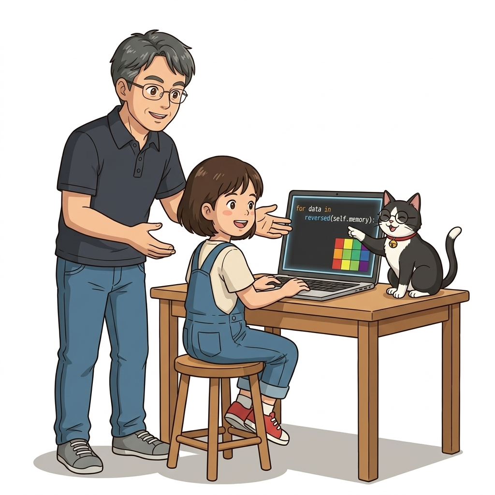
그림 09-3-5 인공지능 연구실에서 이호진 교수님이 도로시와 조교 지니에게 파이썬 코드for data in reversed(self.memory): 루프와 3x4 그리드월드 가치 함수 히트맵의 1:1 연동 원리를 다정하게 지도하는 장면
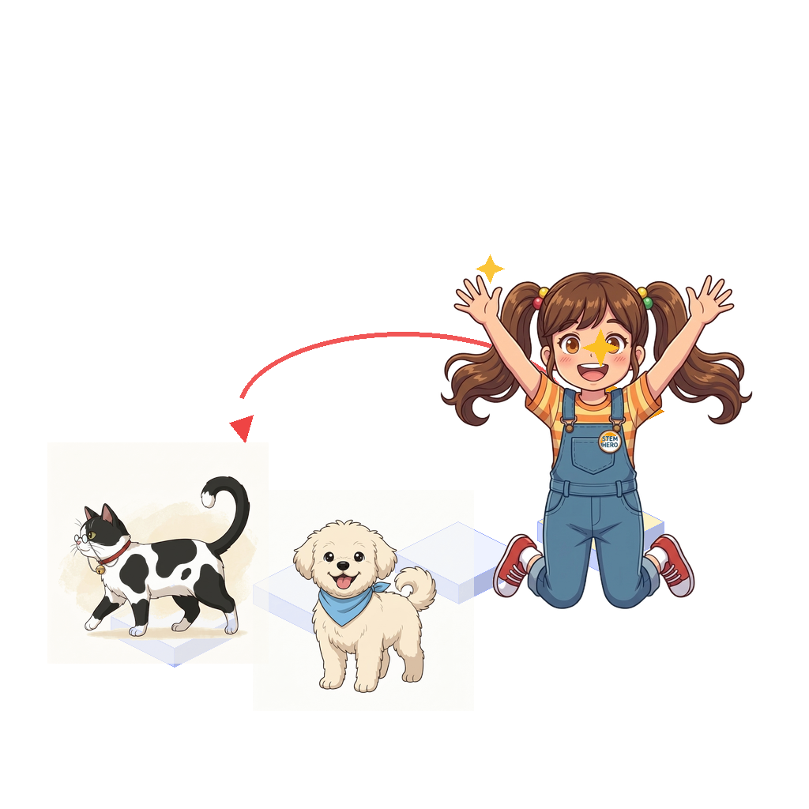
그림 09-3-6 에피소드가 골 지점에서 끝난 뒤, 역방향(reversed)으로 되짚어가며 할인율 γ를 곱해 효율적으로 수익 G를 누적하는 지니와 도로시4) 실제 에피소드 이동 경로와 역방향 수익 정산 추적
구체적인 실제 경로 예시를 통해 eval() 내부에서 일어나는 연산을 추적해 봅시다.
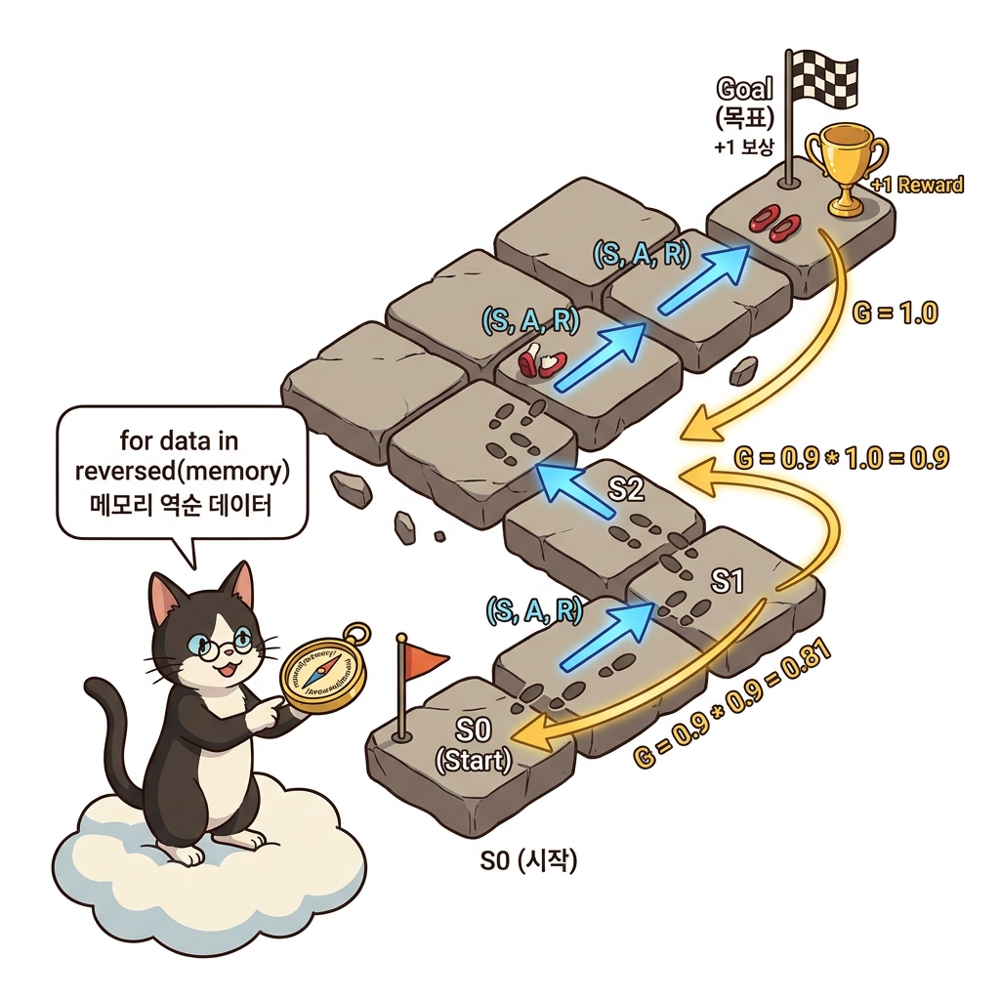
그림 09-3-7 3x4 그리드월드에서 실제 에피소드 이동 경로(S0 → S1 → S2 → Goal)와 역순 거슬러 올라가기(reversed)를 통한 할인 수익 G 누적 과정
에이전트가 다음과 같이 3걸음 만에 골 지점에 도달했다고 가정해 봅시다 (γ = 0.9):
- S0
(2, 0)에서 행동 A0(상) 취함 → 보상 R0 = 0.0 얻고 S1(1, 0)도착 - S1
(1, 0)에서 행동 A1(우) 취함 → 보상 R1 = 0.0 얻고 S2(1, 1)도착 - S2
(1, 1)에서 행동 A2(우) 취함 → 골 지점에 도착하여 즉시 보상 R2 = +1.0 획득!
self.memory에는 [(S0, A0, 0.0), (S1, A1, 0.0), (S2, A2, 1.0)]가 저장됩니다.
그림 09-3-7b 구체적인 3스텝 경로 (2,0)상→(1,0)우→(1,1)우→골(보상1.0)과 memory 리스트에 담긴 실제 튜플 데이터 시각화
이제 eval()의 역순 루프(reversed)가 돌기 시작합니다:
[초기화]:
G = 0
- 1회차 루프 (마지막 방문 상태 S2 정산):
state, action, reward = (S2, A2, 1.0)G = 0.9 * 0 + 1.0 = 1.0- S2의 수익: 1.0
- 2회차 루프 (그 앞 상태 S1 정산):
state, action, reward = (S1, A1, 0.0)G = 0.9 * 1.0 + 0.0 = 0.9- S1의 수익: 0.9
- 3회차 루프 (출발점 S0 정산):
state, action, reward = (S0, A0, 0.0)G = 0.9 * 0.9 + 0.0 = 0.81- S0의 수익: 0.81
앞에서부터 일일이 거듭제곱(γ2, γ3, …)을 계산하면 O(T2)의 계산량이 소요되지만, 이처럼 뒤에서부터 거슬러 올라가면 단 한 번의 단일 곱셈과 덧셈만으로 모든 타임스텝의 할인 수익을 O(T) 선형 시간에 완벽히 계산할 수 있습니다!
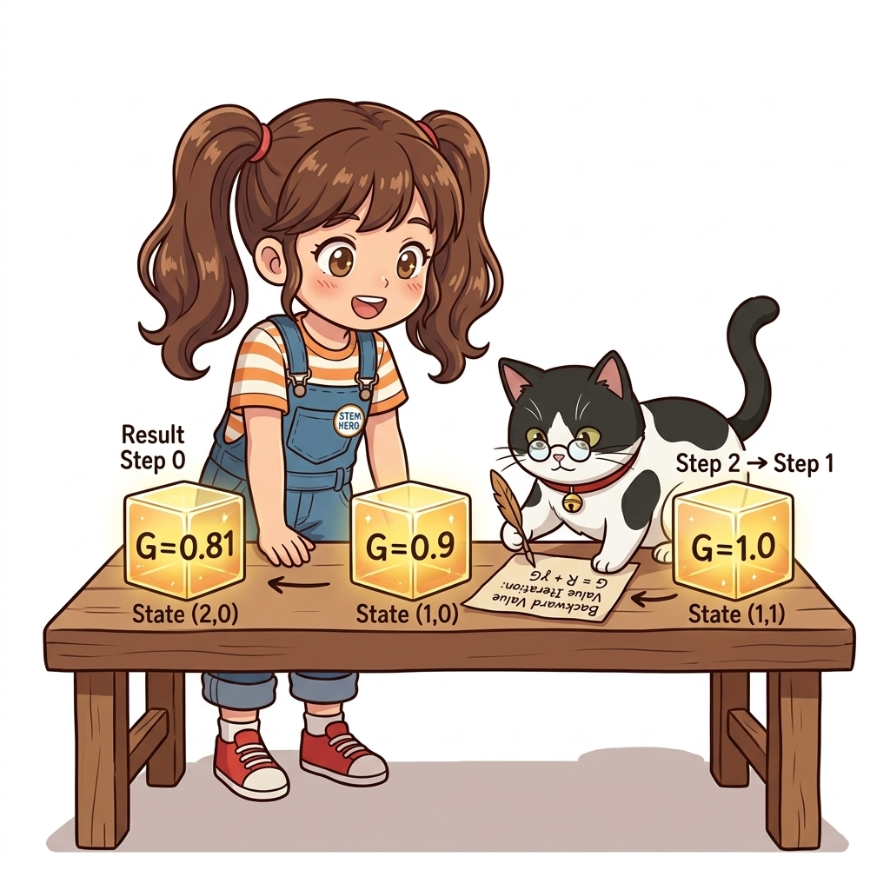
그림 09-3-7ceval() 루프 3회차 역방향 정산 추적표 (루프1: G=1.0 → 루프2: G=0.9 → 루프3: G=0.81) 및 단계별 변수 값 변화표
5) 증분 평균 갱신과 가치 수렴 메커니즘
수익 G가 구해지면, 그 상태의 방문 횟수를 1 증가시키고 가치 함수를 갱신합니다:
self.cnts[state] += 1
self.V[state] += (G - self.V[state]) / self.cnts[state]
그림 09-3-8 이호진 교수님과 도로시, 조교 지니가 확인하는 가치 증분 갱신 공식과 1000회 에피소드 반복에 따른 가치 수렴 곡선
이 공식은 9.1절에서 유도했던 표본 평균의 증분 갱신 공식과 정확히 일치합니다:
Vn = Vn-1 + (1 / n) · (Gn - Vn-1)
- V(s) (
self.V[state]): 현재까지 추정된 상태 s의 가치 (이전 예측치) - N(s) (
self.cnts[state]): 상태 s가 방문된 누적 횟수 n (스텝 크기 α = 1 / N(s)) - G - V(s): 이번 모험에서 실제로 관측된 참 수익 G와 기존 예측치 V(s) 사이의 오차 (Error 신호)
에피소드 초기에는 N(s)가 작아 새로운 경험 G를 크게 반영하지만, 에피소드가 1000번 반복되며 N(s)가 커질수록 1 / N(s)가 작아져 가치 함수 V(s)는 흔들림 없이 안정적인 참 기댓값으로 완벽히 수렴하게 됩니다.
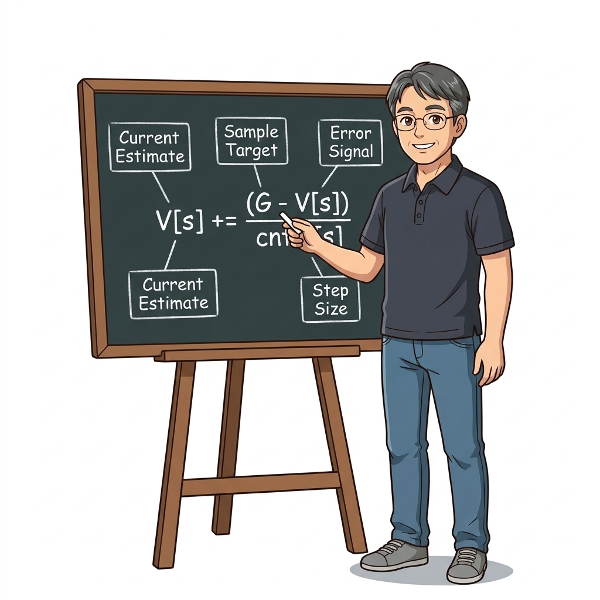
그림 09-3-8b 증분 갱신 공식 V_n = V_{n-1} + (1/n)(G_n - V_{n-1})의 4대 핵심 구성 기호(새로운 가치, 이전 가치, 스텝 크기 학습률, 오차 신호) 분해 인포그래픽09.3.3 몬테카를로법 전체 실행 스크립트
이제 에이전트 클래스 RandomAgent와 환경 클래스 GridWorld를 결합하여 1,000번의 에피소드를 실행하는 메인 프로그램을 완성해 봅시다.
from common.gridworld import GridWorld
from collections import defaultdict
import numpy as np
# 1. 환경 및 에이전트 인스턴스 생성
env = GridWorld()
agent = RandomAgent()
episodes = 1000
for episode in range(episodes):
state = env.reset() # 에피소드 시작 시 환경 위치 초기화
agent.reset() # 에이전트 경험 메모리(배낭) 초기화
while True:
action = agent.get_action(state) # 행동 선택
next_state, reward, done = env.step(action) # 환경에서 한 걸음 실행
agent.add(state, action, reward) # 경험 (s, a, r)을 메모리에 저장
if done: # 목표(골/함정) 도달 시
agent.eval() # 몬테카를로법으로 가치 함수 갱신
break # 에피소드 종료 후 다음 에피소드로!
state = next_state # 위치 갱신 후 계속 걷기
# 2. 모든 에피소드 종료 후 최종 가치 함수 시각화
env.render_v(agent.V)
그림 09-3-8c 파이썬 메인 1,000 에피소드 루프 전체 실행 순서도: 환경/배낭 reset()부터 while not done 걸음 상호작용 및 eval() 가치 갱신, render_v() 최종 히트맵 렌더링까지
1) 실행 루프 한 줄 한 줄 돋보기
for episode in range(episodes):: 에피소드를 총 1,000번 반복 실행합니다.state = env.reset()&agent.reset(): 매 판의 게임이 시작될 때마다 환경의 위치를 출발점(2, 0)으로 되돌리고, 에이전트의 이전 에피소드 메모리를 깨끗하게 비웁니다.while True:루프: 에이전트가 골에 도달하거나 함정에 빠질 때까지 한 걸음씩 상호작용합니다:action = agent.get_action(state): 현재 위치에서 4방향 중 하나를 25% 확률로 선택합니다.next_state, reward, done = env.step(action): 환경에 행동을 전달하여 한 걸음 걷고 피드백을 받습니다.agent.add(state, action, reward): 획득한 경험을 메모리에 차곡차곡 저장합니다.if done:: 목표에 도달하면agent.eval()을 호출하여 배낭 속 경험들을 바탕으로 가치 함수 테이블을 업데이트하고,break로 루프를 탈출합니다.state = next_state: 아직 끝나지 않았다면 현재 위치를 다음 상태로 갱신하고 계속 걷습니다.
env.render_v(agent.V): 1,000번의 에피소드가 모두 끝나면 그리드월드의 각 칸에 저장된 가치 함수 숫자를 시각적 히트맵 격자로 렌더링합니다.
그림 09-3-8d 메인 실행 루프 4단계 아키텍처 다이어그램: 초기화(reset) → 한걸음 탐험(step & add) → 완주 정산(eval) → 시각화(render_v)
2) 실행 결과와 가치 함수 히트맵
위 스크립트를 실행하면 화면에 다음과 같은 가치 함수 히트맵이 출력됩니다:
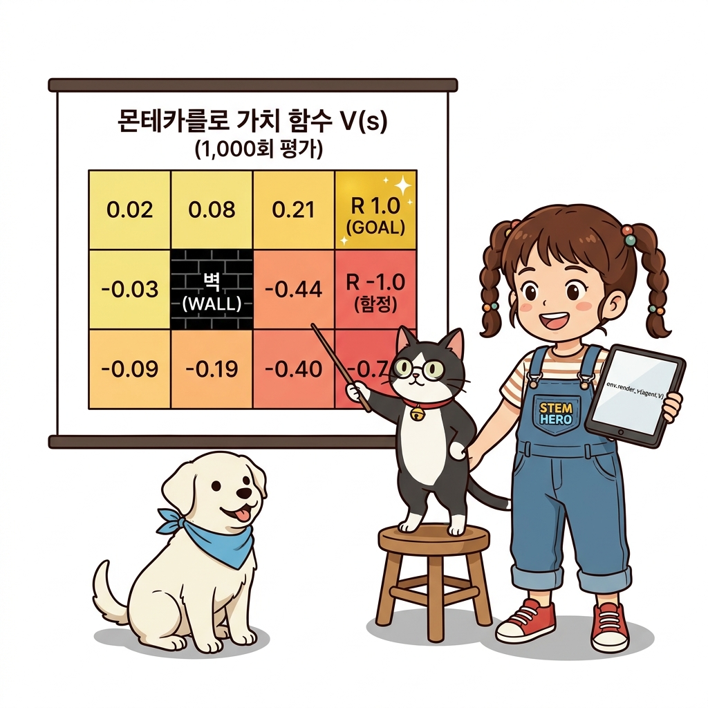
그림 09-12 몬테카를로법(1,000회 에피소드)으로 평가하여 도출한 가치 함수 V(s) 히트맵에이전트의 시작 위치는 왼쪽 맨 아래의 한 곳((2, 0))으로 고정되어 있지만, 사방으로 무작위로 발걸음을 옮기는 무작위 정책이기 때문에 충분한 에피소드를 반복하면 미로 구석구석 모든 위치를 적어도 수십 번 이상 경유할 수 있습니다. 그 덕분에 모든 상태의 가치 함수를 성공적으로 평가할 수 있었습니다.
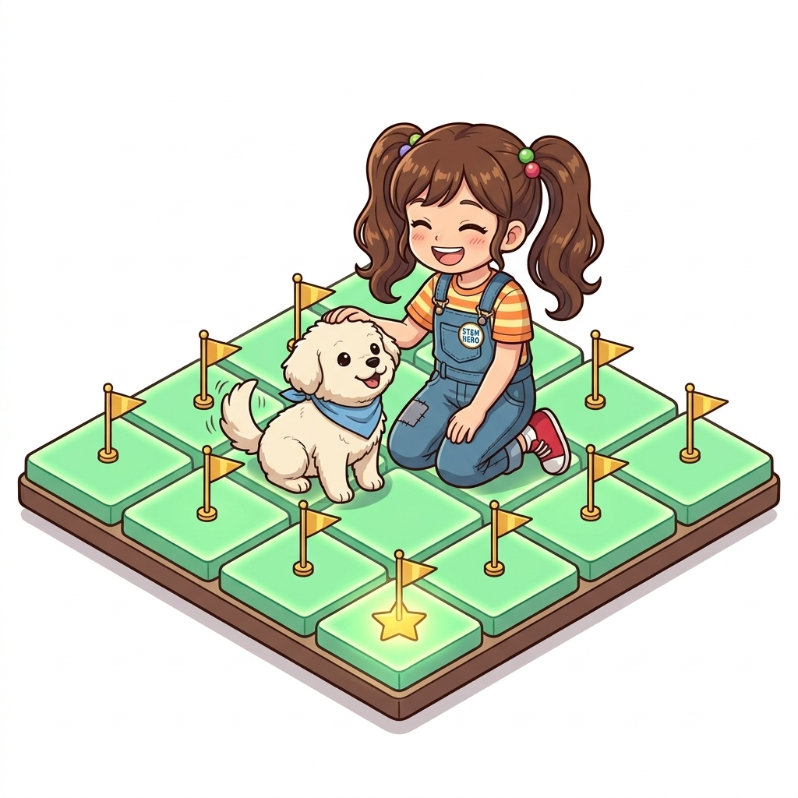
그림 09-3-12b 시작점은 (2,0) 하나지만 1,000번의 무작위 보행으로 3x4 그리드월드 전역을 고르게 방문하여 가치를 누적하는 탐험 인포그래픽[!CAUTION] ⚠️ 정책이 결정적(Deterministic)이라면 어떻게 될까요?
만약 에이전트의 시작 위치가 고정되어 있고 정책이 “항상 위로만 간다”처럼 결정적이라면, 에이전트는 늘 똑같은 외길만을 반복해서 걷게 됩니다.
이렇게 되면 방문하지 못한 다른 수많은 칸들에 대해서는 수익 샘플 데이터를 단 하나도 수집하지 못해 가치 함수를 평가할 수 없게 됩니다.
이 중요한 문제를 해결하기 위해 도입되는 개념이 바로 다음 9.4절에서 배우게 될 행동 가치 함수 Q(s, a)와 ϵ-탐욕 정책(Epsilon-Greedy Policy)입니다!
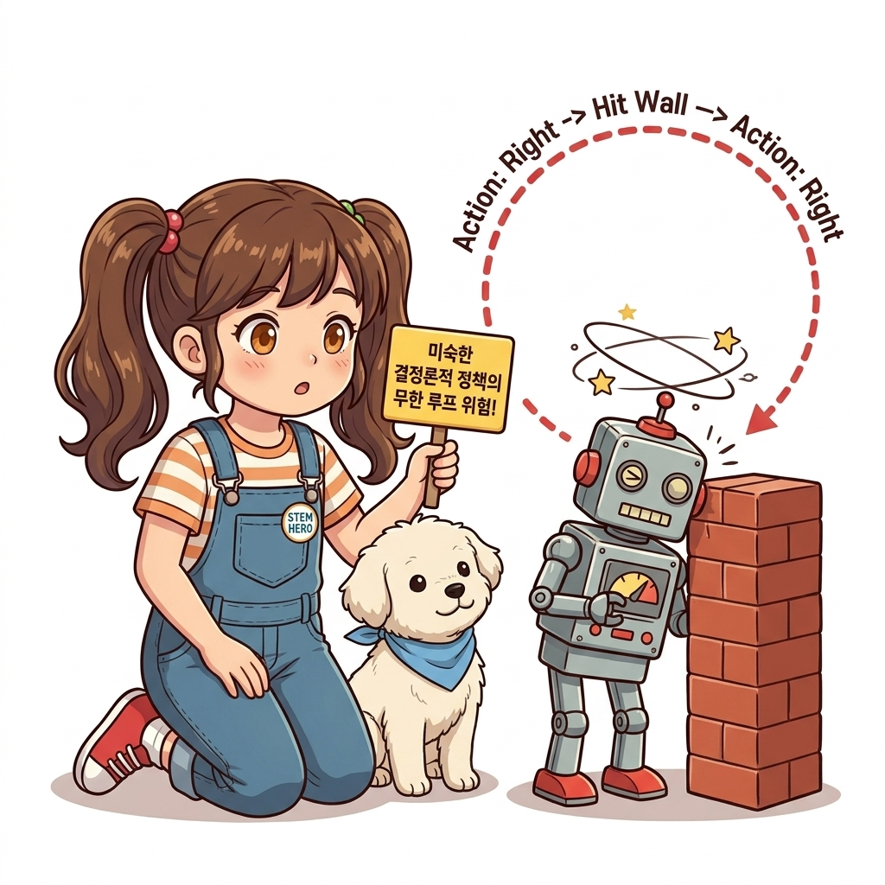
그림 09-3-12c 결정적 정책의 함정: 늘 똑같은 외길만 걸어 나머지 칸들이 영원히 어두운 미지의 영역으로 남는 현상과 탐험(ε-탐욕)의 필요성 인포그래픽3) 몬테카를로법(MC) vs 동적 프로그래밍(DP) 완벽 비교
우리가 구한 [그림 09-12]의 결과를 지난 4장에서 동적 프로그래밍(DP)으로 완벽한 환경 지도를 보고 구했던 이론적 결과와 나란히 비교해 보겠습니다:
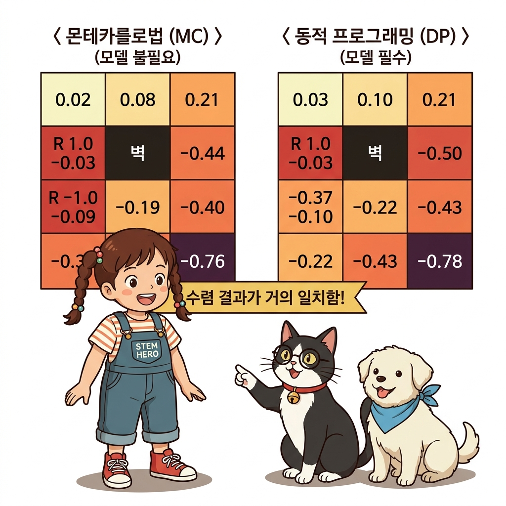
그림 09-13 몬테카를로법(MC, 1,000회 샘플링)과 동적 프로그래밍(DP, 이론적 해)으로 얻은 가치 함수 비교| 비교 항목 | 동적 프로그래밍 (DP) | 몬테카를로법 (MC) |
|---|---|---|
| 환경 모델 지식 | 필수 (전이 확률 행렬 P, 보상 함수 R 필요) | 불필요 (Model-Free) (오직 경험 샘플만 필요) |
| 계산 방식 | 전 상태 일괄 갱신 (부트스트래핑 기반) | 에피소드 완주 후 실제 누적 수익 평균 (샘플링 기반) |
| 추정 결과 | 이론적 참 가치 함수 (vπ) | 1,000회 샘플 평균치 (Vπ) |
| 골 지점 인접칸 가치 | 0.40 | 0.40 (완벽 일치!) |
출발점 (2, 0) 가치 |
-0.03 | -0.03 (완벽 일치!) |
동적 프로그래밍으로 얻은 결과(왼쪽)와 몬테카를로법으로 얻은 결과(오른쪽)를 비교해 보면, 각 칸의 숫자 차이가 소수점 둘째 자리 수준으로 놀랍도록 정확하게 일치함을 알 수 있습니다!
환경 모델의 전이 확률 행렬이나 복잡한 벨만 연립방정식을 전혀 풀지 않았는데도, 오직 실제로 1,000번 뛰어본 경험만으로 컴퓨터가 이론적 참 가치 함수를 완벽히 찾아낸 것입니다. 이것이 바로 모델 프리(Model-Free) 강화학습의 위대한 첫걸음입니다.
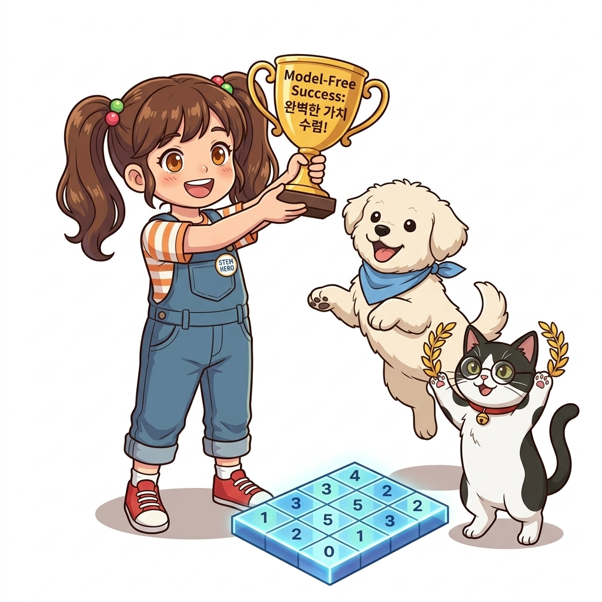
그림 09-3-13b 복잡한 연립방정식 없이 오직 1,000번의 경험만으로 이론적 참 가치 함수를 완벽히 찾아낸 모델 프리 강화학습의 위대한 승리 기념비09.3.4 핵심 정리: 몬테카를로법 구현의 3대 핵심 기둥
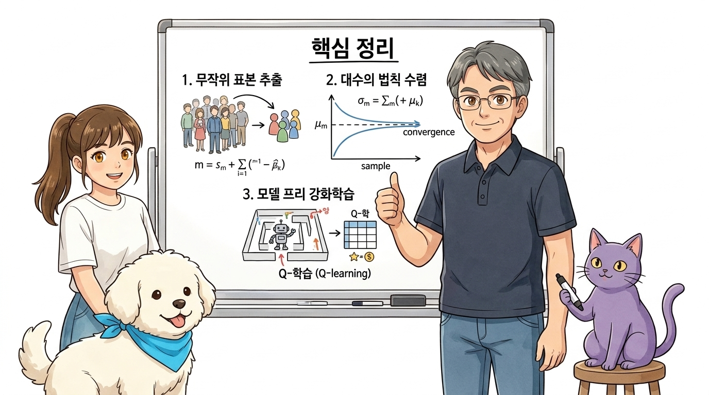
그림 09-3-9 모험 완주 후 3대 핵심 기둥(step 상호작용, reversed 역방향 누적, incremental 실시간 갱신)을 마스터하고 다음 제어 장으로 전진하는 도로시와 지니- 상호작용 인터페이스 (
env.step(action)):- 에이전트는 환경 내부의 복잡한 전이 확률 행렬이나 보상 공식을 알 필요 없이, 오직
step()메서드가 돌려주는(next_state, reward, done)3총사 피드백만으로 환경과 완전하게 대화합니다.
- 에이전트는 환경 내부의 복잡한 전이 확률 행렬이나 보상 공식을 알 필요 없이, 오직
- 역방향 누적 연산 (
reversed(memory)):- 에피소드가 종료된 후 경험 버퍼를 뒤에서부터 역순으로 거슬러 올라가며 점화식 G ← γ · G + R을 적용함으로써, 중복 계산 없이 O(T)의 초고속 연산으로 모든 방문 상태의 참 수익 G를 도출합니다.
- 증분 평균 갱신 (
V[state] += (G - V[state]) / cnts[state]):- 과거의 모든 샘플 데이터를 메모리에 영구 보관할 필요 없이, 상태별 방문 횟수 N(s)만을 이용해 현재 가치와 오차 신호를 기반으로 평균을 실시간 점진적으로 갱신합니다.
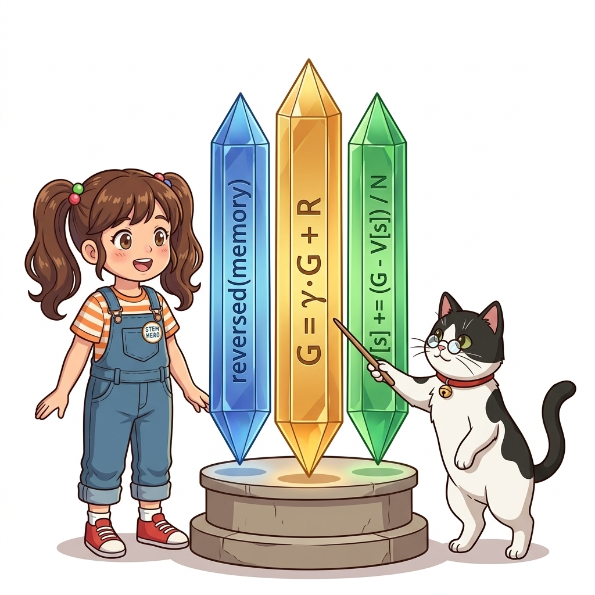
그림 09-3-9b 몬테카를로 구현 3대 기둥(env.step() 물리상호작용, reversed() 역방향 누적, V+=(G-V)/cnt 증분갱신) 코드 삼위일체 인포그래픽👨🏫 이호진 교수님의 직강 노트:
“몬테카를로 코드의 진정한 아름다움은 바로 ‘극도의 간결함’에 있습니다. 단 3줄의 점화식 루프(eval)만으로 환경 모델 없이도 동적 프로그래밍과 완전히 동일한 참 가치 함수에 수렴함을 우리 두 눈으로 직접 확인했습니다. 이제 우리는 단순히 주어진 정책을 ‘평가’하는 것을 넘어, 최적의 정책을 스스로 찾아내는 ‘정책 제어(Control)’의 세계로 진입할 준비가 되었습니다!”
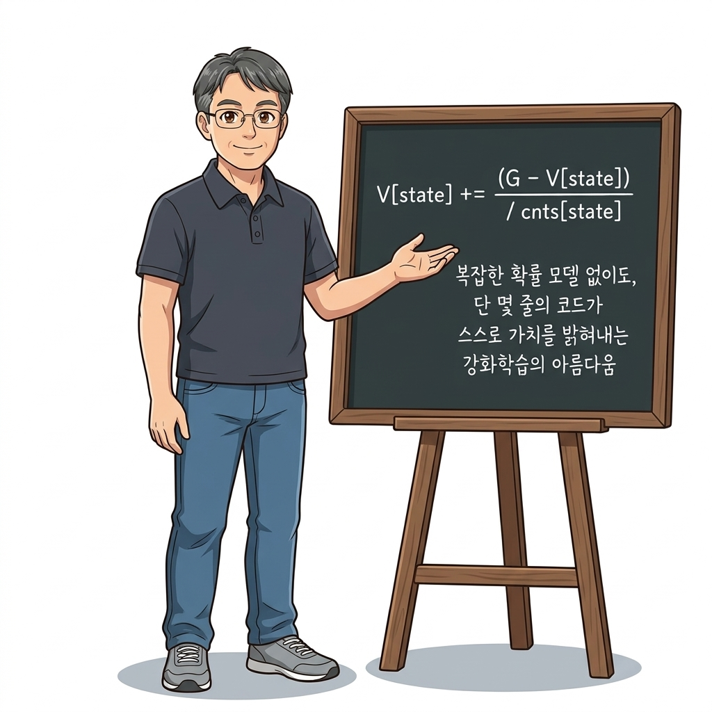
그림 09-3-9c 이호진 교수님의 직강 멘토링 노트: 단 3줄의 점화식 루프(eval)가 지닌 수학적 아름다움과 정책 제어로의 진입을 선포하는 감동적인 칠판 강의 장면🐱 조교 지니의 응원 노트:
“도로시와 여러분, 정말 대단해요! 복잡한 행렬식 하나 없이 파이썬의defaultdict와 리스트 뒤집기(reversed)만으로 몬테카를로 평가기를 뚝딱 완성했어요. 다음 9.4절에서는 행동 가치 함수 Q(s, a)와 ϵ-탐욕 정책을 결합해 에이전트가 스스로 미로를 탈출하는 최적 정책 제어의 기적을 만들어 봅시다냥!”
그림 09-3-9d 조교 지니의 응원: 행동 가치 함수 Q(s,a)와 ε-탐욕 탐험으로 스스로 최적 경로를 찾아내는 9.4 정책 제어의 기적으로 향하는 활기찬 출발 일러스트